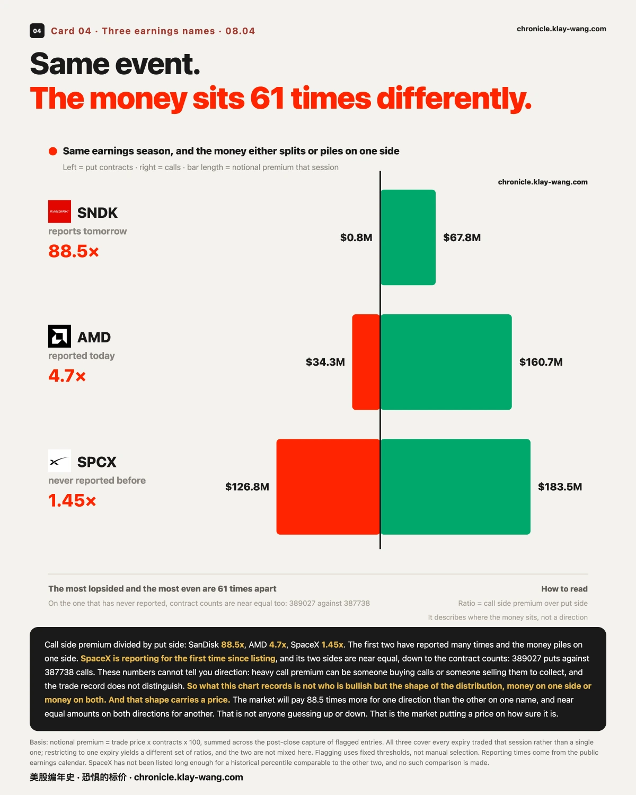
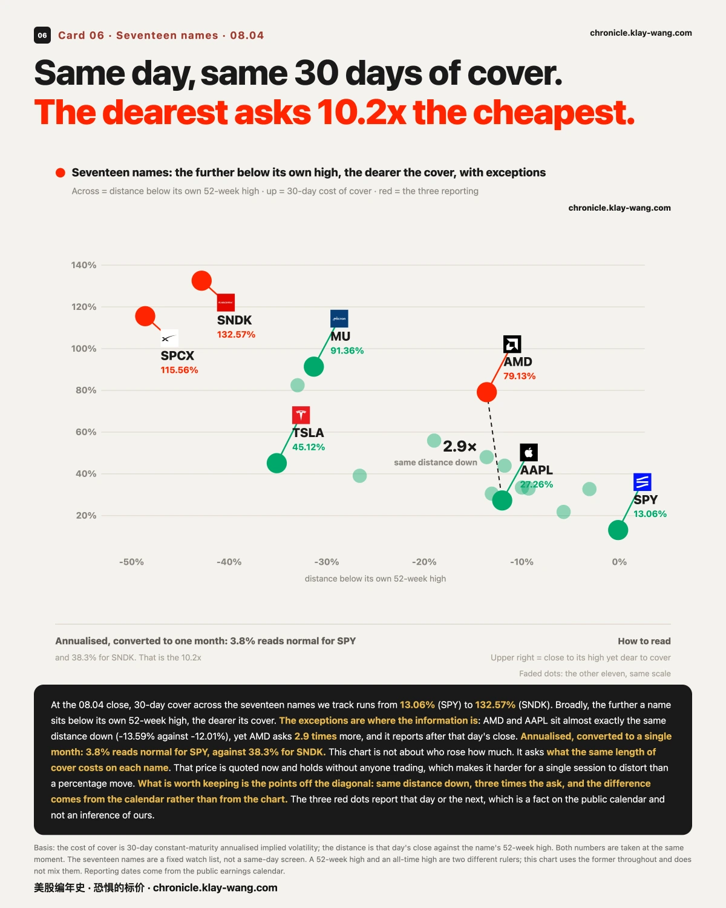
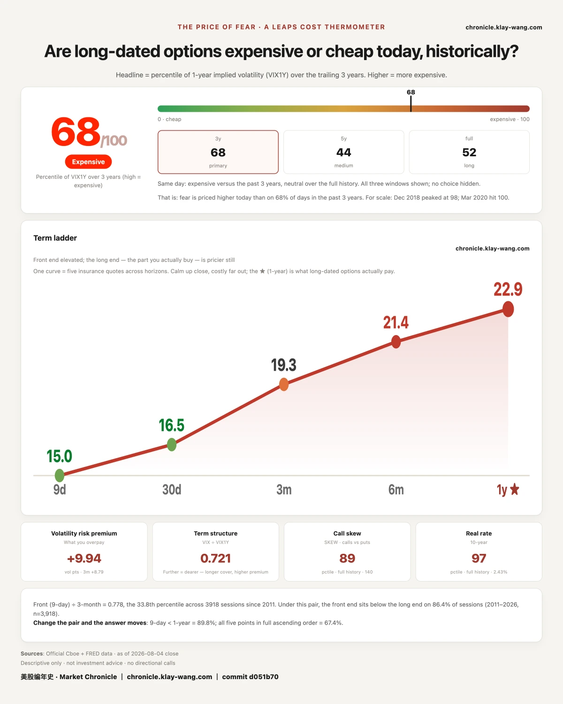

闪迪明天开奖，回本线今天就画好了· 08-04 · 8.3-8.7
In one line: the 08.04 premium across three earnings names shows exactly how the market prices certainty.
- 109 million dollars sits on AMD calls expiring 08.05 struck at 500 and above. It printed 473.51 overnight. That money settles on 08.05 and transfers in full from one side to the other
- SanDisk does not report until 08.05, and the money is already in place: the call side is 88.5 times the put side, and the most expensive position breaks even at 1523.18, up 6.7%. That line is nailed down on 08.04 and checked at the 08.05 close
- SpaceX sits even at 1.45 times, with 1289 more contracts on the put side, and its money is spread from 48% below the close to 163% above it, against 58 points of range for AMD. It is the only one that has never reported before
All three lines say one thing: companies with a reporting history get money on one side; the one without gets money on both, spread everywhere. That is not anyone guessing up or down. That is the market putting a price on how sure it is.
〖Skip to〗① The 109 million that expires 08.05 ② SanDisk's break-even lines ③ A 61-fold spread in how the money sits ④ Downside cover asks 48% more ⑤ A 10.2x spread in the cost of cover
1 · 109 million dollars on a strike that expires 08.05
My read: this is not an opinion. It is a cost, and it settles on 08.05.
First, why we track premium and not percentage moves. A percentage move is a result. Anyone can repeat it, and being wrong about it costs nothing. Premium is different: someone paid real money at a specific strike on a specific expiry. That money only pays off under specific conditions, which makes it a falsifiable proposition with a price on it.
In the 08.04 close capture, AMD calls expiring 08.05, struck at 500 and above, total 17 strikes, 98337 contracts, 109 million dollars in premium. The put side of the same expiry is 7 strikes, 32935 contracts, 23.82 million, barely a quarter of the call side.
AMD reported after the close. The overnight print was 473.51.
If it closes near 473 on 08.05, that 109 million transfers in full from one side to the other.
This sentence has to be written carefully, because it sits on our red line. We do not know who paid it, or which way they leaned. Buying calls to bet on upside and selling calls to collect premium are opposite actions that look identical in the trade record. We have no flow data. We cannot see the two sides.
All we can say: around the proposition that AMD closes above 500 on 08.05, the market transacted 109 million dollars of premium. Who wins and who loses is settled by the 08.05 close. It is zero sum.
While we are here, the 08.03 account. On 08.03 we recorded that AMD and SpaceX together took 60.6% of all premium in unusual activity expiring within two weeks, 22 trades each, 147 million dollars, and we wrote that they report after the 08.04 close and we would come back.
AMD. Last price before the report, 518.58. On the 08.05 expiry, two separate readings during the day both sat near ±7%. Overnight 473.51, a move of 8.69%. About a fifth more than posted. The ruler came up short.
SpaceX. Last price before the report, 125.33. On the 08.07 expiry, two readings both sat near ±14.4%, twice what AMD carried. Overnight 115.60, a move of 7.76%, about half the posted price.
Three boundaries, without which this is fiction. One, the two prices cover different spans, one day for AMD against three for SpaceX, so part of that doubling is time, not doubt; SpaceX has been listed 27 days and has no nearer expiry, a limit in the data rather than a choice. Two, SpaceX's window does not close until 08.07, so this is a mid window reading and not a conclusion; on event windows no single point along the way is the answer, and we learned that the expensive way at an FOMC. Three, overnight trade is far thinner than the regular session.
2 · SanDisk reports on 08.05, and the break-even lines are already drawn
My read: this section is a forward record. Written on 08.04, checked on 08.05, not editable afterward.
The single most expensive position on the 08.04 board belongs to SanDisk, and it does not report until after the 08.05 close.
On the 08.07 expiry, three call strikes carry 67.76 million dollars between them. The entire put side is one strike at 770 thousand. The call side is 88 times the put side.
Laid out strike by strike, each break-even is computable. Unit cost is the day's total premium divided by the day's total contracts, which is a volume-weighted average, not the closing print:
| Strike | Contracts | Premium | Unit cost | Break-even | vs 08.04 close of 1427.62 |
|---|---|---|---|---|---|
| 1400 call | 3308 | 40.75M | 123.18 | 1523.18 | +6.7% |
| 1500 call | 3213 | 25.06M | 78.00 | 1578.00 | +10.5% |
| 2000 call | 4251 | 1.96M | 4.60 | 2004.60 | +40.4% |
| 800 put | 9448 | 0.77M | 0.81 | 799.19 | −44.0% |
What break-even means here: past that line the side that paid the premium starts making money, short of it the side that collected keeps all of it. Both sides are on the record. We do not assume which one.
The 2000 call is the interesting one. It costs 4.60 a contract, and needs SanDisk to rise 40.4% in three days to break even. 4251 contracts, 1.96 million dollars. Cheapest position on the board, and the hardest to collect on.
The expected move the market posted for that expiry is near ±13%. So the 1400 strike's break-even at +6.7% sits inside what the market calls normal, the 1500 strike at +10.5% also sits inside, and the 2000 strike at +40.4% sits well outside.
Those three lines are nailed down on 08.04. We come back on 08.05 to see which were crossed.
3 · Same event, and the money sits 61 times differently
My read: the market prices a company with history and a company without one in completely different ways.
Three earnings names, one number: call side premium divided by put side premium, all on the 08.04 close capture.
| Call side | Put side | Ratio | Prior reports | |
|---|---|---|---|---|
| SanDisk | 67.76M | 0.77M | 88.5x | many |
| AMD | 160.73M | 34.27M | 4.7x | many |
| SpaceX | 183.53M | 126.83M | 1.45x | none |
The most lopsided and the most even are 61 times apart.
On basis: this table covers every expiry traded that session. The 109 million in section one covers only the 08.05 expiry. Two ways of slicing the same name, both correct, not to be read together.
SpaceX carries one more detail: by contract count the put side is actually larger, 389027 against 387738, a gap under four parts in a thousand. More money on calls, more contracts on puts, meaning the put side bought cheaper and further out. Both directions carry serious money, and in comparable size.
One more number makes the point better: the price range the money is spread across. SpaceX's flagged trades sit on 61 separate strikes, the lowest 48.1% below the close and the highest 163.3% above it, a span of 211 percentage points. AMD covers 33 strikes, from 22.9% below to 35.0% above, a span of 58 points. SpaceX's money is spread 3.6 times wider than AMD's, and its 310 million of premium is 59% more than AMD's 195 million, the largest of any name that session.
The furthest strike is the 330 call: 98953 contracts, the highest count on the board, at 24 cents each, on a move of 1.6x within three days.
It is the only one of the three reporting for the first time as a public company. The market has no history to lean on, so the money lands on both sides and spreads everywhere. For AMD the market at least has a consensus range. For SpaceX it does not have one yet.
To say it again: these numbers cannot tell you direction. Heavy call premium can be someone buying calls or someone selling them to collect, and the trade record does not distinguish. So this section records not who is bullish but the shape of the distribution: money on one side, or money on both.
That shape carries information, and it has a price. The market will pay 88.5 times more for one direction than the other on SanDisk, and near equal amounts on both directions for SpaceX. That is not anyone guessing up or down. That is the market putting a price on how sure it is.
This call can be overturned, and here are the conditions. If SpaceX's next report also lands near 1 to 1, this has nothing to do with it being the first and we withdraw it. If SanDisk's next report comes in at a single-digit ratio, then 88.5x was a one-off and we withdraw that too.
One piece of background for the day: on 08.04 the S&P 500 reached 7758.21 intraday and closed at 7736.52, both above the 7620.90 set on 2026.06.02. Its ETF, SPY, set a 773.41 intraday high on the unadjusted series we keep. The same day QQQ closed 723.85, up 3.40%, nearly double SPY's gain, and is still 3.31% below its own 748.65 high. On measurement: we checked two legs, the index itself and its ETF on the unadjusted series, and they agree. The adjusted series is not in our data and was not checked.
4 · On the day it set a record, downside cover asks 48% more
My read: the price is not symmetric around the close. Downside costs materially more.
The first three sections were all about premium, meaning what someone actually paid that session. This section changes the ruler to the cost of cover. That is what is being asked right now, and the ask stands there even on a day when nothing trades. The two are not the same question.
SPY closed at 771.33 on 08.04, up 1.80%, with a session high of 773.41 and a record. On the 08.21 expiry that same day:
- The strike 5.6% below the close asks 16.01%
- The strike 2.0% above the close asks 10.83%
- The first is 1.48 times the second
In plain terms: at the same distance from the close, covering the downside costs about half as much again as covering the upside.
One thing has to be said plainly: this is not a claim that it will fall. We do not take directional views, and this curve cannot support one. It says something else. Protection against falling is itself the dearer thing to buy, and it gets dearer the further down you go. What does dearer mean? It means the market expects wider swings, so covering that strike costs more.
QQQ finished at 723.85 the same day. Its whole curve sits well above SPY's, yet its left-to-right gap is smaller at 1.25 times. One is dearer overall; the other has the wider spread between its two ends.
There is a detail that lines up: QQQ rose 3.40% on the day, nearly double SPY's gain, and it is still 3.31% below its own high of 748.65 while SPY just set a record. The one sitting further below its own high asks more across the whole curve. The next section takes that thread and stretches it across all seventeen names.
One more measurable point: both curves bottom out at the strike sitting on the close, SPY 0.04% below it and QQQ 0.39% below. The curves fall steadily across the range, with a few jumps on the strikes hugging the close, where quotes are thinnest.
This can be overturned. If SPY's left-to-right gap narrows inside 1.2 times over the next few sessions, then 1.48 was particular to the day it set a record, and we withdraw it.
5 · Same day, same 30 days of cover, and the dearest asks 10.2x the cheapest
My read: the market prices a company with history and a company without one in completely different ways.
Take the cost-of-cover ruler from two broad funds out to all seventeen names: the ask runs from 13.06% to 132.57%, so the dearest asks 10.2 times the cheapest.
In plain terms: the market treats a 3.8% swing over a month as normal for SPY, and 38.3% for SanDisk. That is what the 10.2x actually means, rather than an abstract percentage.
Broadly, the further a name sits below its own 52-week high, the dearer its cover. The SPY and QQQ pairing in the last section is the two-point version of that thread. But the exceptions are where the information is.
AMD and Apple sit almost exactly the same distance below their own highs, −13.59% against −12.01%, a gap of under 1.6 points. Yet AMD asks 79.13% and Apple asks 27.26%, 2.9 times more.
That difference does not come from the chart. It comes from the calendar: AMD reports after the 08.04 close. Reporting dates are facts on the public calendar, not inferences of ours. The three red dots are the names reporting on 08.04 or 08.05, and every one of them sits clearly above the others at the same distance down.
There is a case running the other way too: Tesla sits 35.11% below its own high, further down than Micron's 31.31%, and yet asks only 45.12%, less than half of Micron's 91.36%. It is the only one of the seventeen whose cost of cover sits below the 50th percentile of its own range. Being far below the high does not guarantee dear cover, and we put the exception on the same chart rather than cropping it out.
The cheapest cover of the seventeen belongs to SPY, the name that set a record high on 08.04, at 13.06% and only the 20.3rd percentile. The one that fell least is also the cheapest to protect.
This can be overturned. If AMD's ask does not fall back toward Apple's once the report is out, then the premium was not all calendar, and we withdraw it.
Thermometer
The price of fear reads 68, on the expensive side. The three windows are 68, 44 and 52.
What that says: buy a year of cover at this ask and you are paying a price on the expensive side of the past five years, though not absurdly so. The nine day ask divided by the three month ask is 0.778, at the 33.8th percentile, meaning the market sees the next few days as calmer than the next three months.
This is not a number for people buying cover. It is the price being quoted by the people selling it.






No investment advice. No direction calls. No market timing.